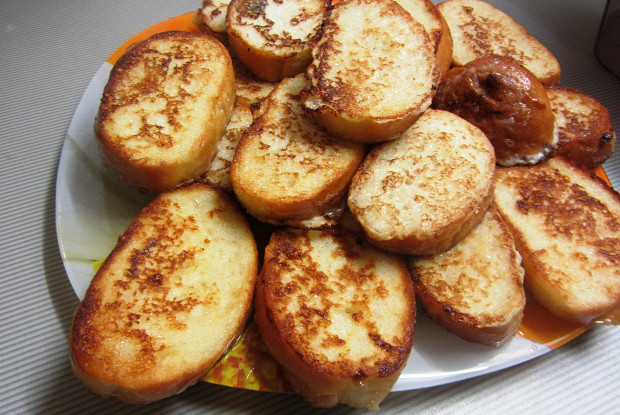

Гренки
СПОСОБ ПРИГОТОВЛЕНИЯ1. Взбить яйца с сахаром.
2. Добавить молоко и перемешать до однородной консистенции (можно добавить соды, если хотите пышные гренки).
3. Разрезать каждый кусок хлеба на 4 части. Можно использовать любой хлеб либо батон.
4. В сковороде разогреть масло. Каждую часть обмакивать в яйца с молоком и обжаривать с двух сторон до образования золотистой корочки. Чтобы внутри хлеб не был сухим, нужно не просто обмакивать, а держать его в яйцах, пока он не пропитается ими полностью.

Приятного аппетита!
Больше информации здесь \/ \/ \/
И.Н.Ф.А